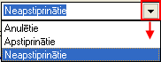
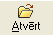

Pamatlīdzekļu dokumenti¶
Pamatlīdzekļudokumentu žurnālā tiek parādīta informācija par uzņēmuma dokumentiem, kuri saistīti ar Pamatlīdzekļiem:
- Pamatlīdzekļu atlikumu ievades dokumenti ;
- Pamatlīdzekļu derīgās lietošanas termiņa maiņas dokumenti ;
- Pamatlīdzekļu ienākšanas dokumenti ;
- Pamatlīdzekļu inventarizācijas dokumenti ;
- Pamatlīdzekļu likvidācijas vērtības korekcijas dokumenti ;
- Pamatlīdzekļu nolietojuma dokumenti ;
- Pamatlīdzekļu norakstīšanas dokumenti ;
- Pamatlīdzekļu pieņemšanas ekspluatācijā dokumenti ;
- Pamatlīdzekļu sadales dokumenti ;
- Pamatlīdzekļu norakstīšanas dokumenti (daļēji) ;
- Pamatlīdzekļu papildināšanas dokumenti ;
- Pamatlīdzekļu pārvērtēšanas dokumenti ;
- Pamatlīdzekļu pārsūtīšanas dokumenti .
Lai atlasītu precīzāku dokumenta veidu, Rīku joslā jānospiež poga
 (Ctrl+F), tiek atvērts logs:
(Ctrl+F), tiek atvērts logs:
{kind=link}
Atlasīšana ir iespējama atlasot pēc:
- piegādātāja;
- datuma;
- numura;
- dokumenta veida;
- atzīmējot izvēles rūtiņu un skatlodziņā tiek rādīta pēdējā izvēle. Lai sarakstu atvērtu, jānoklikšķina uz bultiņas saraksta labajā pusē  un jāizvēlas attiecīgie dokumenti;
- atzīmējot izvēles rūtiņu , tiks atlasīti arī anulētie dokumenti.
{kind=link}
{kind=link}
{kind=link}
Kad visi vēlamie dokumenta atlasīšanas kritēriji ir atzīmēti, jānospiež poga .
{kind=link}
Kad dokuments ir atlasīts, to ir iespējams detalizētāk apskatīt, Rīku joslā nospiežot pogu  (Alt+A).
{kind=link}
Instrukcija par vairāku Pamatlīdzekļu automatizētu apstrādi pieejama šeit